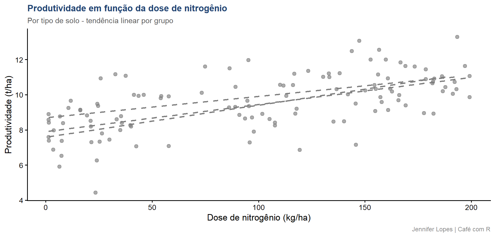
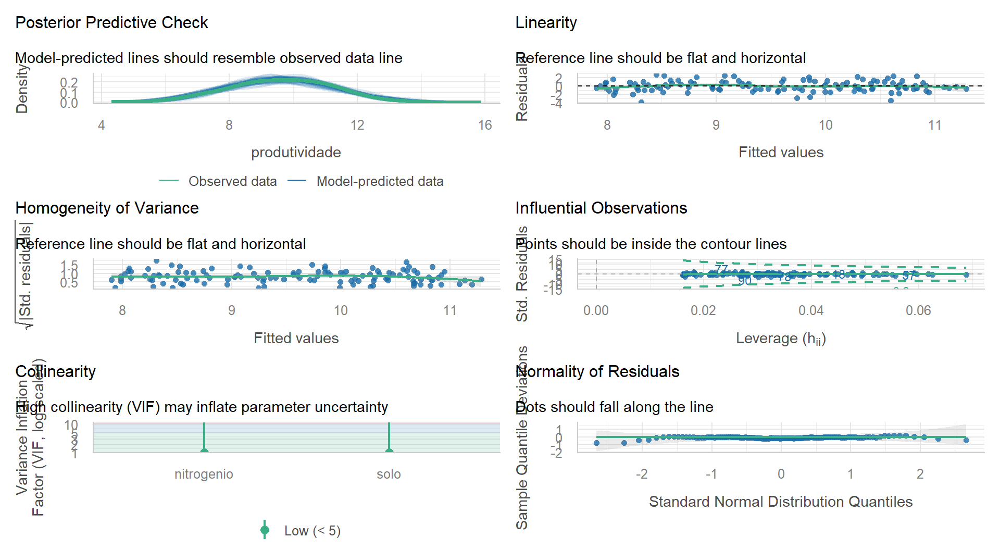
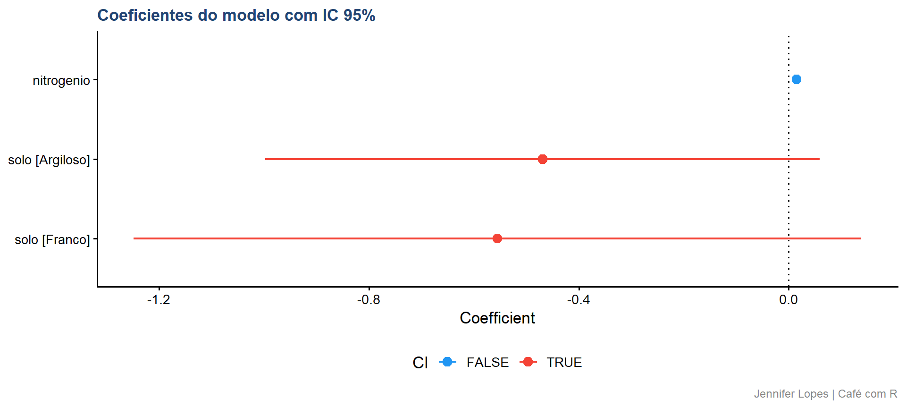
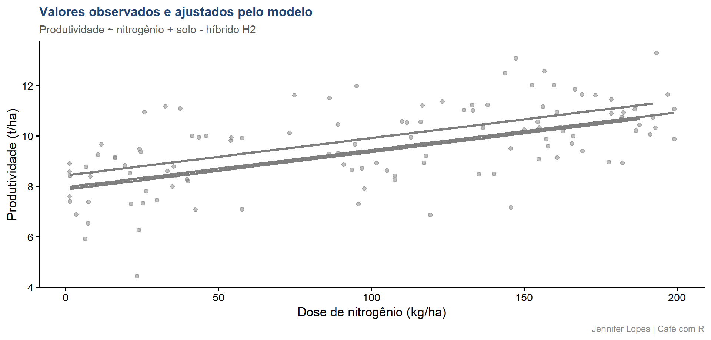

Aula 28. Modelagem Estatística
Fluxo completo em 10 passos com tidyverse, broom, easystats e tidymodels
Democratização
Esta aula apresenta o fluxo completo da modelagem estatística em 10 passos. Os dados são os mesmos das aulas anteriores - híbrido H2 - com a adição de variáveis de fertilidade e dose de nitrogênio para suportar os exemplos de modelagem.

Acompanhe o Café com R

Objetivos da aula
- Compreender o que é um modelo estatístico e para que ele serve
- Executar o fluxo completo de modelagem em 10 passos
- Conhecer as famílias de modelos mais utilizadas em dados agronômicos
- Aplicar
broom,easystatsetidymodelsna prática - Verificar pressupostos e interpretar diagnóstico de resíduos
- Comunicar resultados de forma técnica e substantiva
O que é modelagem estatística
- Um modelo estatístico é uma representação matemática formal de um fenômeno real. Ele descreve como uma variável resposta \(Y\) se relaciona com uma ou mais variáveis explicativas \(X\), quantificando essa relação com estimativas e medidas de incerteza.
Para que serve:
- Explicar relações entre variáveis
- Testar hipóteses sobre efeitos
- Fazer predições em novas observações
- Otimizar decisões em experimentos e no campo
- Avaliar incerteza e risco
Important
Atenção: modelo bom não é o mais complexo é o mais parcimonioso e confiável. Um modelo que explica bem com menos parâmetros é preferível a um que ajusta perfeitamente apenas nos dados observados.
Fluxo da modelagem
Dados → Modelo → Estimação → Diagnóstico → Inferência/PrediçãoEsse fluxo não é linear na prática.
Diagnóstico inadequado leva de volta à escolha do modelo.
Exploração insuficiente compromete a estimação.
Cada passo informa o seguinte e pode questionar o anterior.
Os 10 Passos
Fluxo Completo da Modelagem Estatística
Passo 1 - Definir o objetivo
- Antes de qualquer decisão técnica, é necessário estabelecer com clareza o que se quer alcançar com a modelagem.
Três objetivos possíveis, com implicações distintas:
| Objetivo | Pergunta central | Implicação para o modelo |
|---|---|---|
| Explicação | Quais variáveis afetam \(Y\) e como? | Interpretabilidade dos coeficientes |
| Predição | Qual o valor de \(Y\) para novos dados? | Acurácia fora da amostra |
| Ambos | Explicar e generalizar | Equilíbrio entre ajuste e complexidade |
Important
Atenção: um modelo construído para explicação não deve ser avaliado apenas por métricas preditivas, e vice-versa.
- Confundir os objetivos leva a escolhas metodológicas inadequadas desde o início.
Passo 2 - Definir o problema
Com o objetivo estabelecido, o problema é especificado em termos estatísticos:
- Qual é a variável resposta \(Y\)? É contínua, binária, de contagem, ordinal?
- Quais são as variáveis explicativas \(X\)? São contínuas, categóricas, ambas?
- Qual é a estrutura dos dados? Observações independentes, medidas repetidas, dados hierárquicos?
- Qual é a população de interesse? A inferência se dirige a quem?
No contexto desta aula:
\(Y\) = produtividade do híbrido H2 (contínua, t/ha)
\(X\) = dose de nitrogênio (contínua, kg/ha) e tipo de solo (categórica)
Objetivo: explicar o efeito do nitrogênio sobre a produtividade, controlando pelo tipo de solo.
Passo 3 - Explorar e preparar os dados
A exploração descritiva precede qualquer decisão de modelagem.
Ela revela a distribuição das variáveis, a presença de valores atípicos, a necessidade de transformações e a estrutura das relações entre as variáveis.
Código: exploração com skimr
Output: exploração com skimr
| Name | select(amostra, produtivi… |
| Number of rows | 120 |
| Number of columns | 4 |
| _______________________ | |
| Column type frequency: | |
| character | 1 |
| numeric | 3 |
| ________________________ | |
| Group variables | None |
Variable type: character
| skim_variable | n_missing | complete_rate | min | max | empty | n_unique | whitespace |
|---|---|---|---|---|---|---|---|
| solo | 0 | 1 | 6 | 8 | 0 | 3 | 0 |
Variable type: numeric
| skim_variable | n_missing | complete_rate | mean | sd | p0 | p25 | p50 | p75 | p100 | hist |
|---|---|---|---|---|---|---|---|---|---|---|
| produtividade | 0 | 1 | 9.56 | 1.60 | 4.43 | 8.51 | 9.66 | 10.73 | 13.30 | ▁▃▇▇▂ |
| fertilidade | 0 | 1 | 4.79 | 1.67 | 0.08 | 3.83 | 4.83 | 5.86 | 9.75 | ▁▅▇▃▁ |
| nitrogenio | 0 | 1 | 98.97 | 64.25 | 1.32 | 34.64 | 106.44 | 156.78 | 199.06 | ▇▂▅▅▆ |
Código: dispersão produtividade ~ nitrogênio
amostra |>
ggplot(aes(x = nitrogenio, y = produtividade,
color = solo)) +
geom_point(alpha = 0.65, size = 2.2) +
geom_smooth(method = "lm", se = FALSE,
linewidth = 1, linetype = "dashed") +
scale_color_manual(values = c(
"Argiloso" = cores_cafe["azul_escuro"],
"Arenoso" = cores_cafe["azul_claro"],
"Franco" = cores_cafe["marrom"])) +
labs(
title = "Produtividade em função da dose de nitrogênio",
subtitle = "Por tipo de solo - tendência linear por grupo",
x = "Dose de nitrogênio (kg/ha)",
y = "Produtividade (t/ha)",
color = "Solo",
caption = "Jennifer Lopes | Café com R") +
temaGráfico: dispersão produtividade ~ nitrogênio

Passo 4 - Escolher o modelo
1. Natureza da variável resposta:
| Tipo de \(Y\) | Família indicada |
|---|---|
| Contínua, simétrica | LM - Modelo Linear |
| Contagem | GLM - Poisson ou Negativa Binomial |
| Binária (0/1) | GLM - Binomial (logit, probit) |
| Contínua positiva, assimétrica | GLM - Gamma |
| Dados hierárquicos ou repetidos | LMM ou GLMM |
2. Estrutura dos dados: observações independentes permitem LM/GLM. Dados com blocos, localidades ou medidas repetidas requerem efeitos aleatórios.
3. Princípio da parcimônia: entre dois modelos com ajuste equivalente, o mais simples é preferível.
Important
Atenção: a escolha do modelo antes da exploração dos dados é um erro metodológico frequente. A natureza dos dados deve guiar a escolha, não o hábito ou a familiaridade com determinado procedimento.
Passo 5 - Estimar os parâmetros
- A estimação determina os valores dos parâmetros do modelo que melhor descrevem os dados observados.
Métodos principais:
- Mínimos Quadrados Ordinários (MQO): minimiza a soma dos quadrados dos resíduos. Padrão para modelos lineares com erros normais e independentes.
\[\hat{\beta} = (X^TX)^{-1}X^TY\]
- Máxima Verossimilhança (MV): maximiza a probabilidade de observar os dados dado o modelo. Padrão para GLM, LMM e GLMM.
\[\hat{\theta} = \arg\max_\theta \, \mathcal{L}(\theta \mid \text{dados})\]
Código: estimação com tidymodels
# Especificar o modelo com parsnip
modelo_spec <- linear_reg() |>
set_engine("lm") |>
set_mode("regression")
# Criar receita de pré-processamento com recipes
receita <- recipe(
produtividade ~ nitrogenio + solo,
data = amostra) |>
step_dummy(solo) |>
step_normalize(nitrogenio)
# Montar o workflow
wf <- workflow() |>
add_recipe(receita) |>
add_model(modelo_spec)
# Ajustar o modelo
modelo_ajustado <- wf |> fit(data = amostra)
# Extrair coeficientes com broom
modelo_ajustado |>
extract_fit_parsnip() |>
tidy(conf.int = TRUE) |>
mutate(across(where(is.numeric), ~ round(.x, 4)))Output: coeficientes do modelo
# A tibble: 4 × 7
term estimate std.error statistic p.value conf.low conf.high
<chr> <dbl> <dbl> <dbl> <dbl> <dbl> <dbl>
1 (Intercept) 9.90 0.211 47.0 0 9.49 10.3
2 nitrogenio 0.954 0.118 8.07 0 0.720 1.19
3 solo_Argiloso -0.469 0.267 -1.76 0.0812 -0.998 0.0591
4 solo_Franco -0.555 0.350 -1.59 0.116 -1.25 0.138 Passo 6 - Diagnosticar o modelo
O diagnóstico avalia se os pressupostos do modelo são atendidos pelos dados.
Um modelo mal especificado ou com pressupostos violados produz estimativas e inferências não confiáveis, independentemente do tamanho da amostra.
Pressupostos do modelo linear:
| Pressuposto | O que verifica | Como verificar |
|---|---|---|
| Linearidade | Relação linear entre \(X\) e \(Y\) | Resíduos vs. ajustados |
| Normalidade dos resíduos | Erros com distribuição normal | QQ-plot dos resíduos |
| Homocedasticidade | Variância constante dos erros | Scale-location plot |
| Independência | Sem autocorrelação entre resíduos | Resíduos vs. ordem |
| Ausência de influência excessiva | Sem pontos alavancados | Cook’s distance |
Código: diagnóstico com performance
Output: diagnóstico com check_model()

Passo 7 - Validar o modelo
A validação avalia a capacidade do modelo de generalizar para dados não observados.
Um modelo que ajusta bem apenas nos dados de treino pode ter desempenho fraco em dados novos - fenômeno conhecido como sobreajuste.
Estratégias de validação:
| Estratégia | Quando usar | Pacote |
|---|---|---|
| Holdout (treino/teste) | Amostras grandes | rsample (tidymodels) |
| Validação cruzada k-fold | Amostras moderadas | rsample + tune |
| Leave-one-out | Amostras pequenas | rsample |
| Bootstrap | Qualquer tamanho | rsample |
Código: validação cruzada com tidymodels
set.seed(2026)
# Divisão treino/teste
divisao <- initial_split(amostra, prop = 0.75)
treino <- training(divisao)
teste <- testing(divisao)
# Validação cruzada 5-fold no conjunto de treino
folds <- vfold_cv(treino, v = 5)
# Ajustar e avaliar com yardstick
resultado_cv <- wf |>
fit_resamples(
resamples = folds,
metrics = metric_set(rmse, rsq, mae))
collect_metrics(resultado_cv) |>
mutate(across(where(is.numeric), ~ round(.x, 4)))Output: métricas de validação cruzada
# A tibble: 3 × 6
.metric .estimator mean n std_err .config
<chr> <chr> <dbl> <dbl> <dbl> <chr>
1 mae standard 1.04 5 0.0845 pre0_mod0_post0
2 rmse standard 1.30 5 0.0954 pre0_mod0_post0
3 rsq standard 0.381 5 0.114 pre0_mod0_post0Passo 8 - Comparar famílias de modelos
- Quando há incerteza sobre qual modelo utilizar, a comparação formal orienta a escolha com base em critérios objetivos.
Critérios de comparação:
| Critério | O que mede | Interpretação |
|---|---|---|
| \(R^2\) ajustado | Proporção da variância explicada | Maior é melhor - penaliza complexidade |
| AIC | Qualidade do ajuste + complexidade | Menor é melhor |
| BIC | AIC com penalidade maior | Menor é melhor - favorece parcimônia |
| RMSE | Erro médio de predição | Menor é melhor |
Important
Atenção: AIC e BIC comparam modelos ajustados aos mesmos dados. Modelos ajustados a amostras diferentes ou com variáveis resposta transformadas não são diretamente comparáveis por esses critérios.
Código: comparação com broom::glance()
# Modelo 1: apenas nitrogênio
m1 <- lm(produtividade ~ nitrogenio, data = amostra)
# Modelo 2: nitrogênio + solo
m2 <- lm(produtividade ~ nitrogenio + solo, data = amostra)
# Modelo 3: nitrogênio + solo + interação
m3 <- lm(produtividade ~ nitrogenio * solo, data = amostra)
# Comparar com broom::glance()
list(
"M1: nitrogenio" = m1,
"M2: nitrogenio + solo" = m2,
"M3: nitrogenio * solo" = m3) |>
map(glance) |>
list_rbind(names_to = "modelo") |>
select(modelo, r.squared, adj.r.squared, AIC, BIC, sigma) |>
mutate(across(where(is.numeric), ~ round(.x, 4)))Output: comparação entre modelos
# A tibble: 3 × 6
modelo r.squared adj.r.squared AIC BIC sigma
<chr> <dbl> <dbl> <dbl> <dbl> <dbl>
1 M1: nitrogenio 0.352 0.346 406. 414. 1.29
2 M2: nitrogenio + solo 0.373 0.356 406. 420. 1.28
3 M3: nitrogenio * solo 0.379 0.352 409. 428. 1.28Famílias de modelos: tabela comparativa
| Família | Resposta | Pressuposto central | Função no R |
|---|---|---|---|
| LM | Contínua, normal | Linearidade, homocedasticidade | lm() |
| GLM - Poisson | Contagem | Distribuição de Poisson | glm(family = poisson) |
| GLM - Binomial | Binária (0/1) | Distribuição binomial | glm(family = binomial) |
| GLM - Gamma | Contínua positiva | Distribuição Gamma | glm(family = Gamma) |
| LMM | Contínua, hierárquica | Efeitos aleatórios normais | lmer() (lme4) |
| GLMM | Não normal, hierárquica | GLM + efeitos aleatórios | glmer() (lme4) |
Passo 9 - Interpretar os resultados
A interpretação traduz os coeficientes estimados em afirmações substantivas sobre o fenômeno estudado.
No modelo linear:
\[\hat{Y} = \hat{\beta}_0 + \hat{\beta}_1 X_1 + \hat{\beta}_2 X_2\]
\(\hat{\beta}_1\) representa a variação esperada em \(Y\) para um aumento de uma unidade em \(X_1\), mantendo as demais variáveis constantes.
Important
Atenção: coeficientes significativos não implicam efeitos relevantes na prática. Um efeito de 0,01 t/ha por kg/ha de nitrogênio pode ter p-valor abaixo de 0,001 com \(n = 120\) e ser irrelevante para a decisão de adubação. Sempre reporte o IC junto ao coeficiente.
Código: interpretação com parameters
Output: coeficientes com parameters
# Fixed Effects
Parameter | Coefficient | SE | 95% CI | t(116) | p
-----------------------------------------------------------------------
(Intercept) | 8.43 | 0.27 | [ 7.89, 8.97] | 30.90 | < .001
nitrogenio | 0.01 | 1.80e-03 | [ 0.01, 0.02] | 8.07 | < .001
soloArgiloso | -0.47 | 0.27 | [-1.00, 0.06] | -1.76 | 0.081
soloFranco | -0.56 | 0.35 | [-1.25, 0.14] | -1.59 | 0.116 Código: visualização dos coeficientes
Gráfico: coeficientes com IC 95%

Passo 10 - Comunicar os resultados
- Comunicar resultados de modelagem é traduzir a linguagem estatística em resposta à pergunta original, de forma que seja compreensível para quem precisa tomar decisões com base na análise.
O que comunicar:
- A pergunta que motivou a análise
- O modelo escolhido e a justificativa da escolha
- Os coeficientes principais com IC - não apenas p-valores
- O diagnóstico: os pressupostos foram atendidos?
- A magnitude prática do efeito - não apenas a significância estatística
- As limitações: o que o modelo não consegue responder
Código: predição e visualização final
# augment() adiciona valores ajustados e resíduos ao data frame original
m2 |>
augment(data = amostra) |>
ggplot(aes(x = nitrogenio, y = produtividade,
color = solo)) +
geom_point(alpha = 0.5, size = 1.8) +
geom_line(aes(y = .fitted), linewidth = 1.2) +
scale_color_manual(values = c(
"Argiloso" = cores_cafe["azul_escuro"],
"Arenoso" = cores_cafe["azul_claro"],
"Franco" = cores_cafe["marrom"])) +
labs(
title = "Valores observados e ajustados pelo modelo",
subtitle = "Produtividade ~ nitrogênio + solo - híbrido H2",
x = "Dose de nitrogênio (kg/ha)",
y = "Produtividade (t/ha)",
color = "Solo",
caption = "Jennifer Lopes | Café com R") +
temaGráfico: observados e ajustados

Bloco Final
Erros Mais Comuns e Resumo
Erro 1 - Escolher o modelo antes de explorar os dados
Aplicar diretamente um modelo linear sem verificar a distribuição da variável resposta, a presença de valores atípicos ou a estrutura das relações entre as variáveis compromete todos os passos subsequentes.
A exploração descritiva não é opcional - é o que informa a escolha adequada do modelo.
Erro 2 - Ignorar o diagnóstico de resíduos
- Resíduos com padrão sistemático indicam que o modelo não captura adequadamente a estrutura dos dados, seja por falta de variáveis relevantes, transformação inadequada da resposta ou pressuposto violado.
Um modelo que não passa no diagnóstico não deve ser usado para inferência ou predição, independentemente do valor de \(R^2\).
Erro 3 - Confundir ajuste com predição
Um \(R^2\) alto nos dados de treino não garante bom desempenho em dados novos. Modelos com muitos parâmetros tendem a memorizar o ruído dos dados observados, sobreajuste.
A validação cruzada é o procedimento correto para avaliar a capacidade preditiva real do modelo.
Erro 4 - Reportar apenas p-valor sem tamanho do efeito
O p-valor indica se o efeito é detectável estatisticamente, não se é relevante na prática.
Com amostras grandes, efeitos triviais produzem p-valores muito pequenos.
Sempre reporte o coeficiente estimado, seu intervalo de confiança e uma avaliação da relevância prática no contexto do problema.
Erro 5 - Usar modelo complexo quando o simples resolve
Adicionar variáveis, interações ou efeitos aleatórios sem justificativa metodológica aumenta a complexidade sem necessariamente melhorar a qualidade da inferência.
A comparação formal por AIC, BIC ou validação cruzada orienta a decisão entre modelos concorrentes com base em evidência, não em preferência.
Resumo: os 10 passos da modelagem
| Passo | Título | Pacotes principais |
|---|---|---|
| 1 | Definir o objetivo | - |
| 2 | Definir o problema | - |
| 3 | Explorar e preparar os dados | skimr, tidyverse |
| 4 | Escolher o modelo | - |
| 5 | Estimar os parâmetros | tidymodels (parsnip, recipes) |
| 6 | Diagnosticar o modelo | performance, see |
| 7 | Validar o modelo | tidymodels (rsample, yardstick) |
| 8 | Comparar modelos | broom::glance() |
| 9 | Interpretar os resultados | parameters, broom::tidy() |
| 10 | Comunicar os resultados | broom::augment(), ggplot2 |
Referências
- Wickham, H., Çetinkaya-Rundel, M., Grolemund, G. (2023). R for Data Science (2nd ed.). O’Reilly. r4ds.hadley.nz
- Kuhn, M., Silge, J. (2022). Tidy Modeling with R. O’Reilly. tmwr.org
- Lüdecke, D. et al. (2021). easystats: Framework for Easy Statistical Modeling. Journal of Open Source Software. easystats.github.io
- Robinson, D., Hayes, A., Couch, S. (2023). broom: Convert Statistical Objects into Tidy Tibbles. broom.tidymodels.org
Obrigada!

Continue praticando e explorando.
Esta aula é parte do projeto Café com R. É open source. Use, compartilhe e adapte.
Siga o Café com R
Que cada gole desperte uma nova ideia.
Que cada script abra uma nova conversa.
Que o Café com R se torne um ponto de encontro nosso.

Jennifer Lopes | Café com R